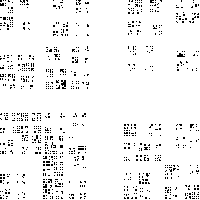

| A more common random fractal construction involves statistical
self-similarity: instead of specifying exact scalings, at each iteration
the scaling of each piece is selected randomly from a set range. |
| Suppose the scaling factors are selected randomly from the
range [1/4, 1/2]. A square with diagonal corners (a, b)
and (a+L, b+L) is replaced by four squares arranged as shown here. Each
of the scaling factors r1, r2, r3, and r4
is selected randomly from [1/4, 1/2]. |
|
| For example, here are three realizations of the first iterate of this random process;
below each is the sixth iterate. |
| |
| |
|
| |
 | |
 |
|
| Click
here
for an animation of the first six steps of the left example. |
| Statistical self-similarity refers to the fact that sub-pieces of each piece have
the same distribution of sizes. |
| |
| With probability 1, the dimension of this set is given by the
randomized Moran equation: |
| E(r1d + r2d +
r3d + r4d) = 1. |
| For example, construct a random Cantor set by at each stage either |
| replacing each interval with two intervals scaled by 1/3, with probability 1/4, or |
| replacing each interval with two intervals scaled by 1/4, with probability 3/4 |
|
| Then the randomized Moran equation becomes |
| 1 | = E(r1d + r2d) |
| = (1/4)⋅((1/3)d + (1/3)d) + (3/4)⋅((1/4)d + (1/4)d) |
| = (1/2)⋅(1/3)d + (3/2)⋅(1/4)d |
|
| Solving numerically, we find d ≈ 0.529053 |